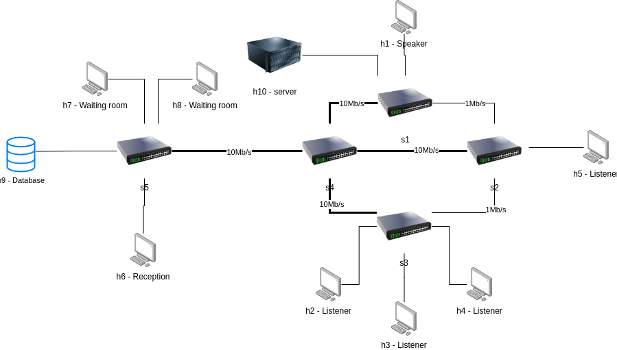

SDN Network slicing - First Topology
Current: Default Mode

Always On Mode
Listener Mode
No Guest Mode
Speaker Mode
SDN Network slicing - Second Topology
Current: Default Mode
First Mode
Second Mode
Third Mode
Go to Second Topology
Update QoS
Update
Waiting for a request